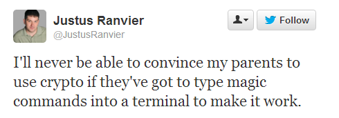
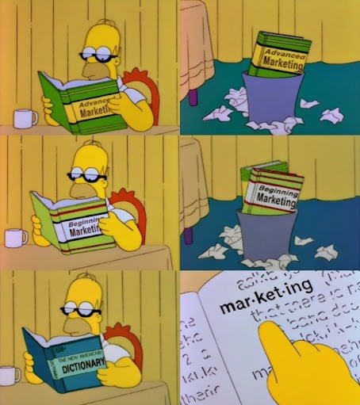

TrueCrypt:
Crypto for everyone
Who dis?

Web Developer
Build in the physical world with wood
Arduino and Pi
AFOL
Sheldon McGee has been a web developer since having to do things the REALLY hard way (Cold Fusion, ASP) before things got easier (PHP, ASP.NET) and then hard again (Rails, Node). He's been a fan of Google API’s since before there were any and all Google hackers were really just map hackers. He has passion for building in the physical world too and uses maple and alder (no pine! except in plywood sometimes) whenever he can to make furniture for around his house (dresser bed, headboard, entertainment center, cabinets, etc). He also dabbles with Arduino and Raspberry Pi to get his embedded fix. AFOL and SNOT building (i.e. Technic). Oh, and he's been to every Google I/O and has been wearing Google Glass almost every day since May no matter how much his “friends” make fun of him.
Started off
as beginner talk
But then
"I would encourage you to include some content for the more technical people, like how TrueCrypt works on a more detailed level or explaining some of the more advanced features."
So I added a slide
(at the end)
Why for everyoneone?
I saw this tweet.
What is it?
Free open source on the fly encryption
- Encrypted file that you can mount as a new disk
- (or not a file, encrypt the partition)
- (or keep it as a file but have a hidden volume inside that file)
source-available??
What is it?
- Cross-platform (Windows, Mac, Linux . . . no Android, iPhone support yet)
- Free
- Easy to use for everyone
How does it work?
This is the new slide. It's not at the end.
They make a big deal about "modes of operation".
Hash and Encruption Algorithms.
Why not encrypt the entire disk?
It's slow
Plausible deniability
This is Snowden level stuff
You can't KNOW it's a truecrypt file (unless you name the file mysecretstuff.This-Is-a-TrueCrypt-file.tc) but random data in a file is a pretty good indicator
The keys to decrypt the data are stored in ram (and they CAN and do keep your computer powered up to bring it to the lab)
Watch out for the evil maid (i.e. spyware that have keyloggers).
Government can't compel you to SAY your password (5th amendment, FOR NOW!) even though they can make you open a safe.
So let's try it.
Resources
TrueCrypt docsWikipedia
